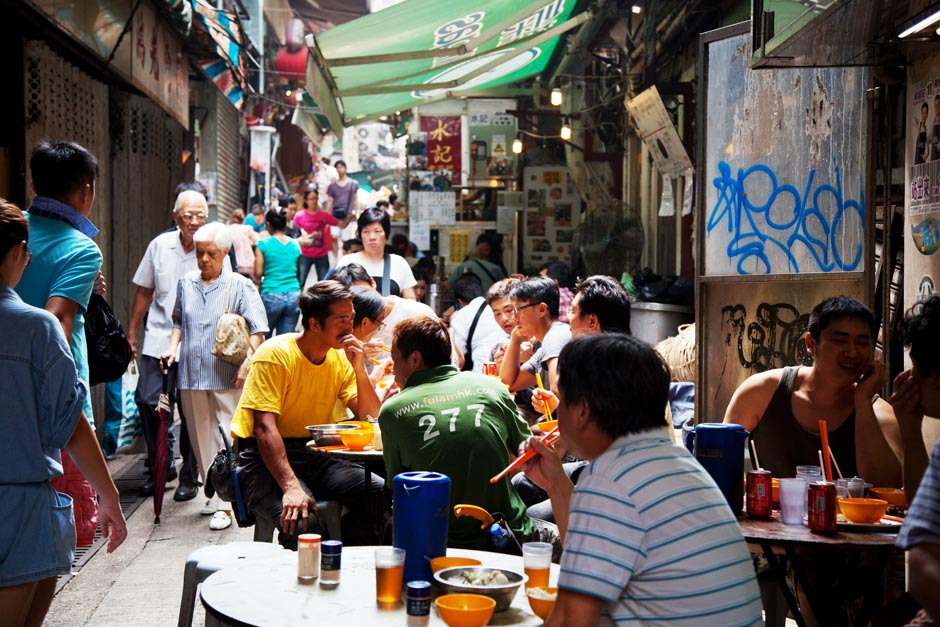
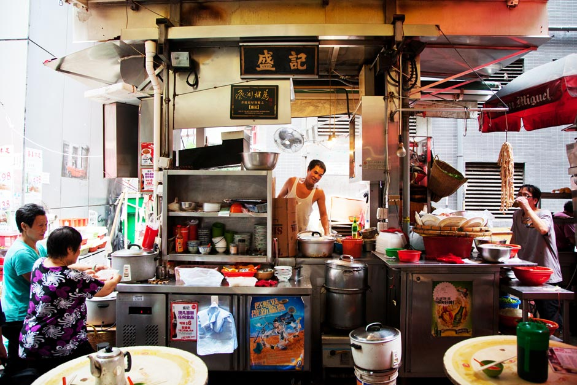
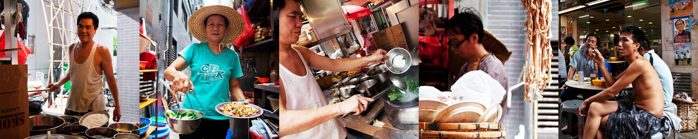
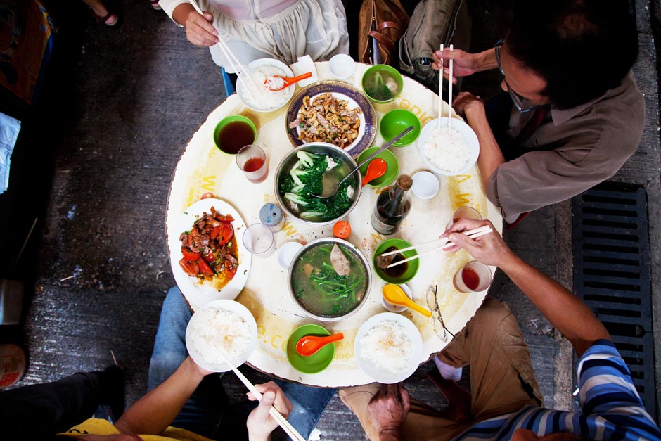
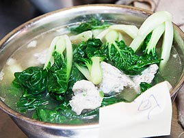
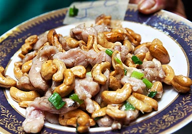
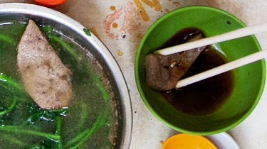
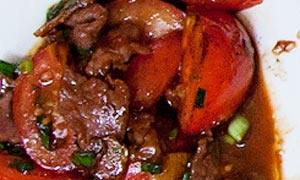
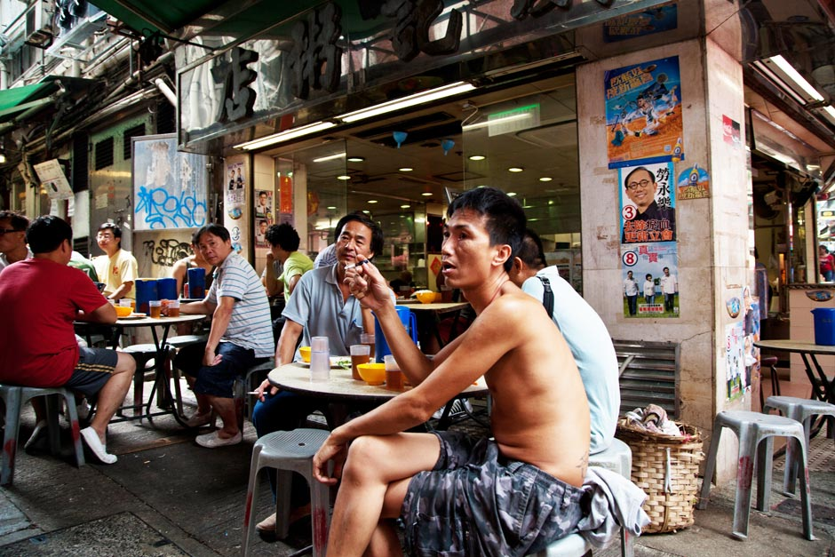

Hong Kong's Dai Pai Dongs
click on the red infoboxes for more ->

Hong Kong's celebrated culinary range is rapidly changing and diverse - from £5 Michelin-starred dim sum cafes to experimental fusion served by renowned chefs on the top floors of towering hotels. Everpresents are hard to find, but the city's few remaining Dai Pai Dongs - open air street food vendors - have operated since the 1950s, and still draw large lunchtime crowds to cluttered tables scattered in front of the stalls. The Stanley Street dai pai dongs lie less than 200 feet from Queens Road, the Central District's skyscraper-lined thoroughfare.



SPECIALS
Alongside regular menu items, daily specials are written on chalkboards above the dai pai dongs. Visitors typically choose a single dish - HK$34 (£2.70) - and share rice and vegetables with friends or diners who happen to be on their table
click on the letters for translations ->
click on the letters for translations ->
Luncheon meat with egg
Pig trotters with peanuts
Salted duck egg with chicken wings
Tarot with steamed pork
Ox stomach
Beef brisket
Chopped chicken
Chopped pork
Free: a glass of soy milk (subject to availability)

52-year old Lin Zhi Cheng's dai pai dong has been in his family since the 1960s, serving wok-cooked dishes to local workers in the heart of Central. Food is purchased from local markets, and each dish takes under three minutes to make - the most expensive costs HK$47 (£3.80)

A typical dai pai dong meal for four -> click on the dishes to find out what they are

Dace Balls & Seasonal Vegetables 时菜领域球

Diced Pork & Cashew Nuts 腰果肉丁

Chicken Liver & Seasonal Vegetables 时菜珍肝

Beef With Tomatoes 番茄牛肉

Keep exploring...
COPY HERE FOR CREDITS
Want to tell stories like this?
COPY HERE